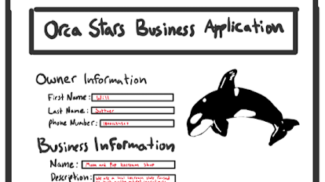
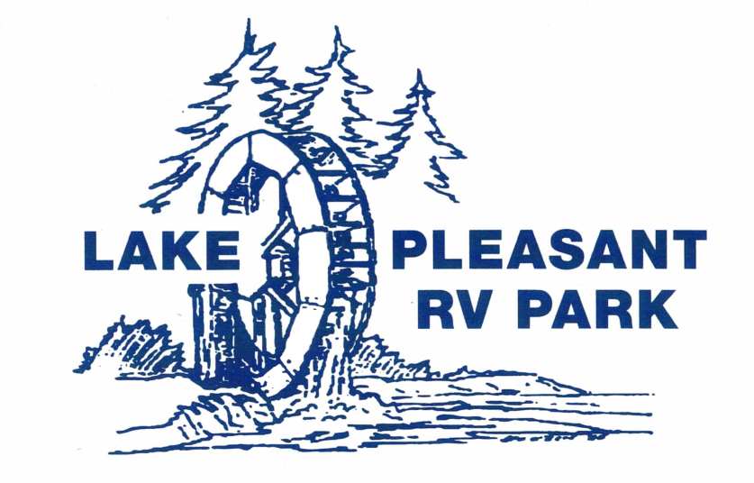

Frontend
HTML
CSS
JavaScript
Profile
Full-stack Developer
I'm a full-stack developer focused on building responsive web applications and polished user interfaces. My experience includes JavaScript, C#, SQL, and ASP.NET Core MVC. I’ve worked on both solo and team-based projects, building applications with authentication, database integration, and modern frontend design. I’m particularly interested in frontend-focused roles where I can combine engineering with visual design.
My experience includes HTML, CSS, JavaScript, C#, SQL, and ASP.NET Core MVC. I’ve worked on both individual and team-based projects, building full-stack web applications with database integration, authentication, and responsive UI design. I’m particularly interested in full-stack roles where I can continue building scalable web applications while improving my engineering skills and contributing to well-designed, user-focused software.
I’m also interested in visual design, which is why I enjoy building projects that combine solid technical structure with polished UI and distinctive style. I like building software that not only works well, but also feels engaging to use.
Systems
Technologies I’ve used in web development, software projects, and team-based application work.
Projects
A few projects that show my experience with frontend development, full-stack apps, and interactive UI work.


Audio